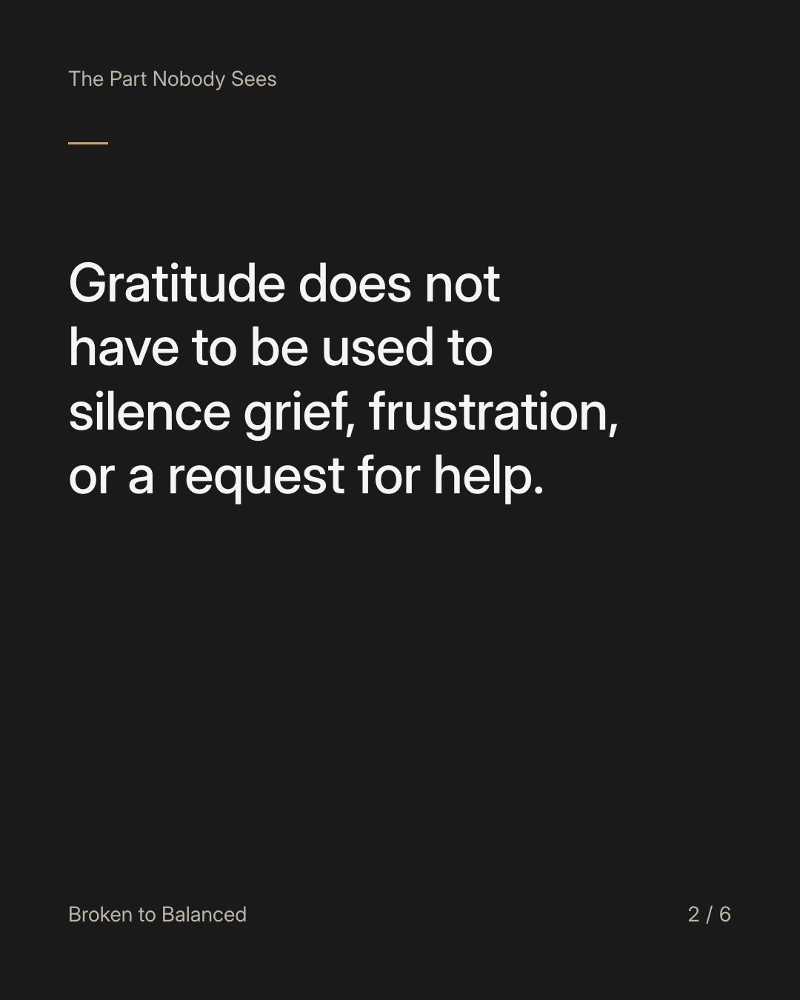
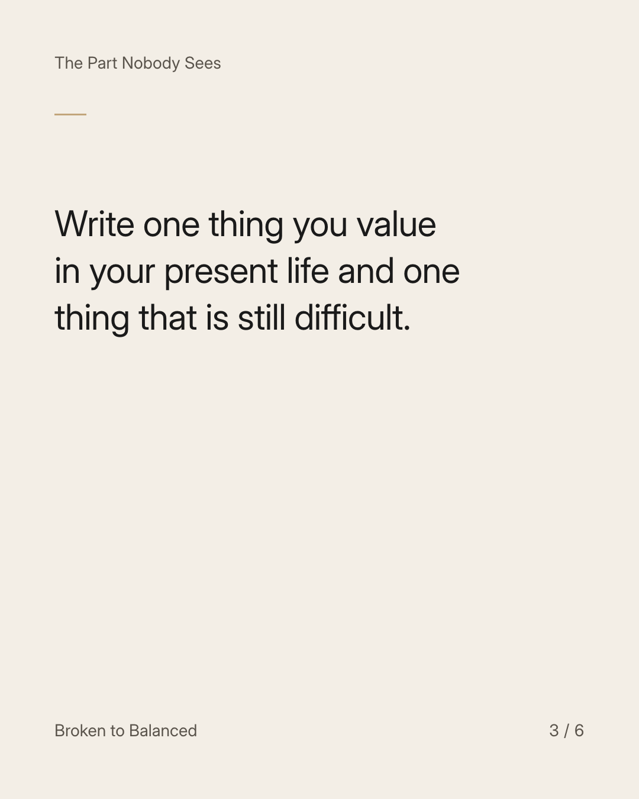
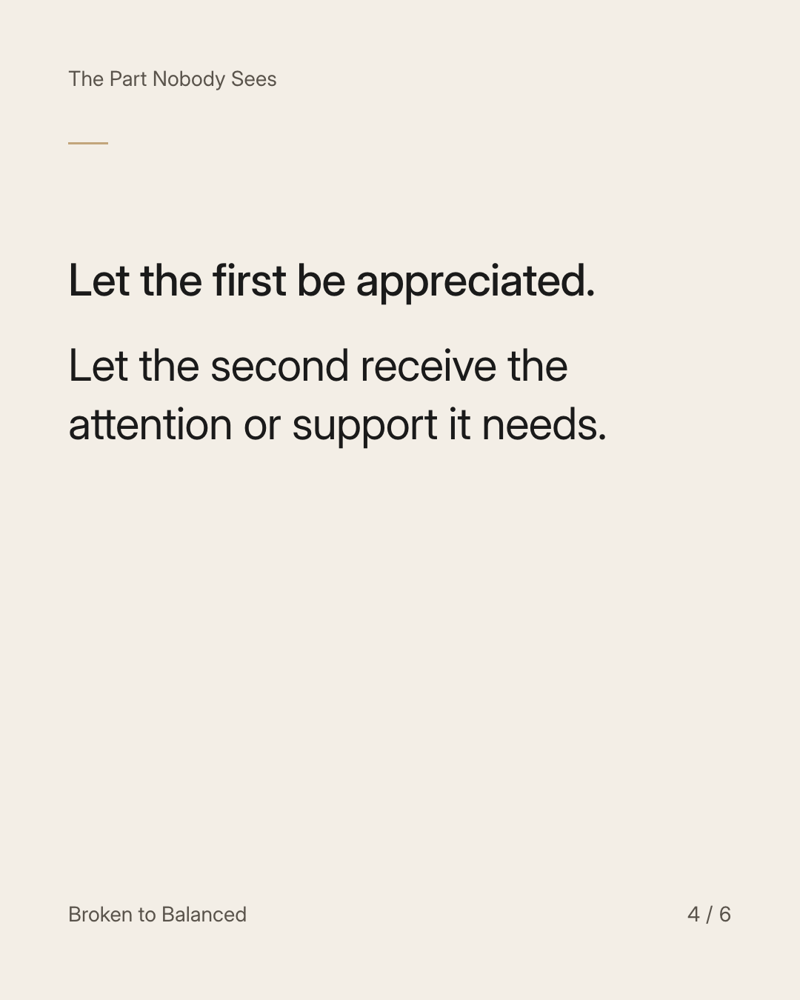
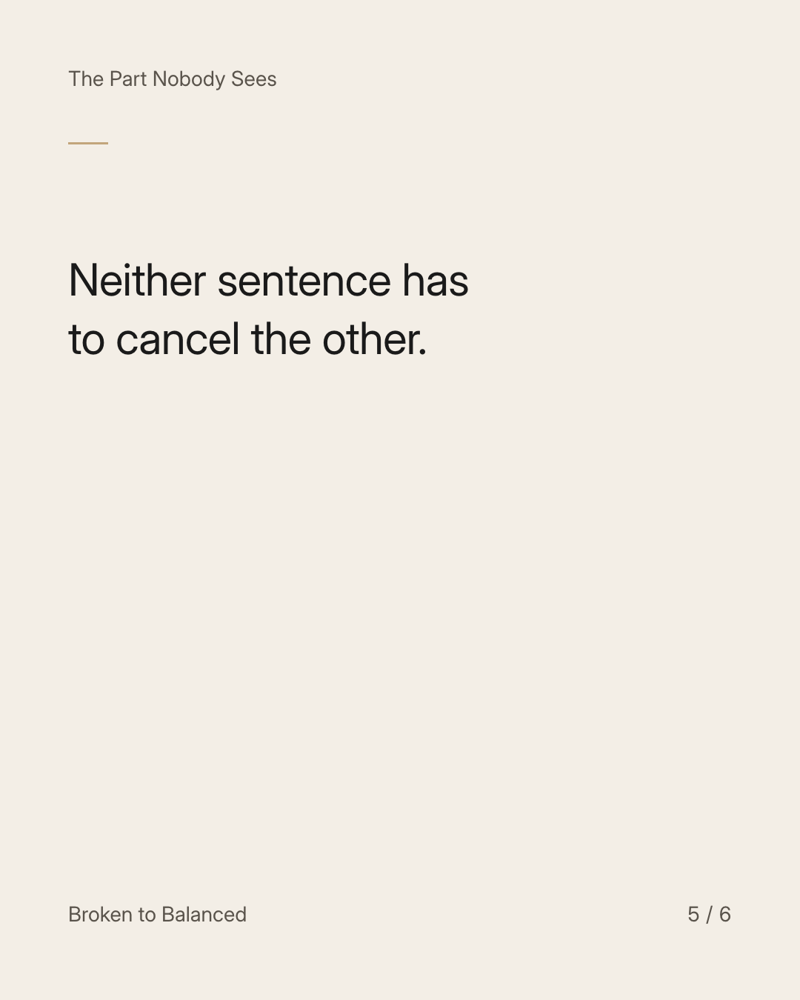
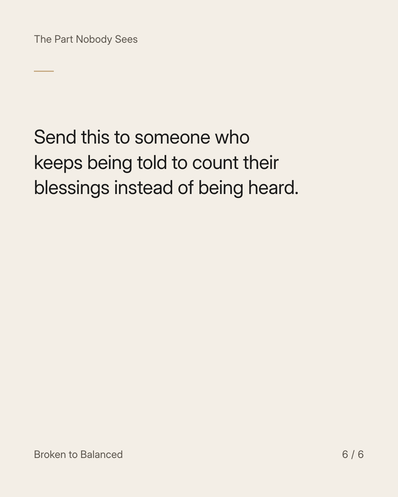

Exact text and accessibility text
You can be grateful for what remains and honest about what you lost.
Slide 1 of 6. You can be grateful for what remains and honest about what you lost.


Exact text and accessibility text
Gratitude does not have to be used to silence grief, frustration, or a request for help.
Slide 2 of 6. Gratitude does not have to be used to silence grief, frustration, or a request for help.


Exact text and accessibility text
Write one thing you value in your present life and one thing that is still difficult.
Slide 3 of 6. Write one thing you value in your present life and one thing that is still difficult.


Exact text and accessibility text
Let the first be appreciated. Let the second receive the attention or support it needs.
Slide 4 of 6. Let the first be appreciated. Let the second receive the attention or support it needs.


Exact text and accessibility text
Neither sentence has to cancel the other.
Slide 5 of 6. Neither sentence has to cancel the other.


Exact text and accessibility text
Send this to someone who keeps being told to count their blessings instead of being heard.
Slide 6 of 6. Send this to someone who keeps being told to count their blessings instead of being heard.
Exact caption
Plain-text fallback: select and copy the caption.